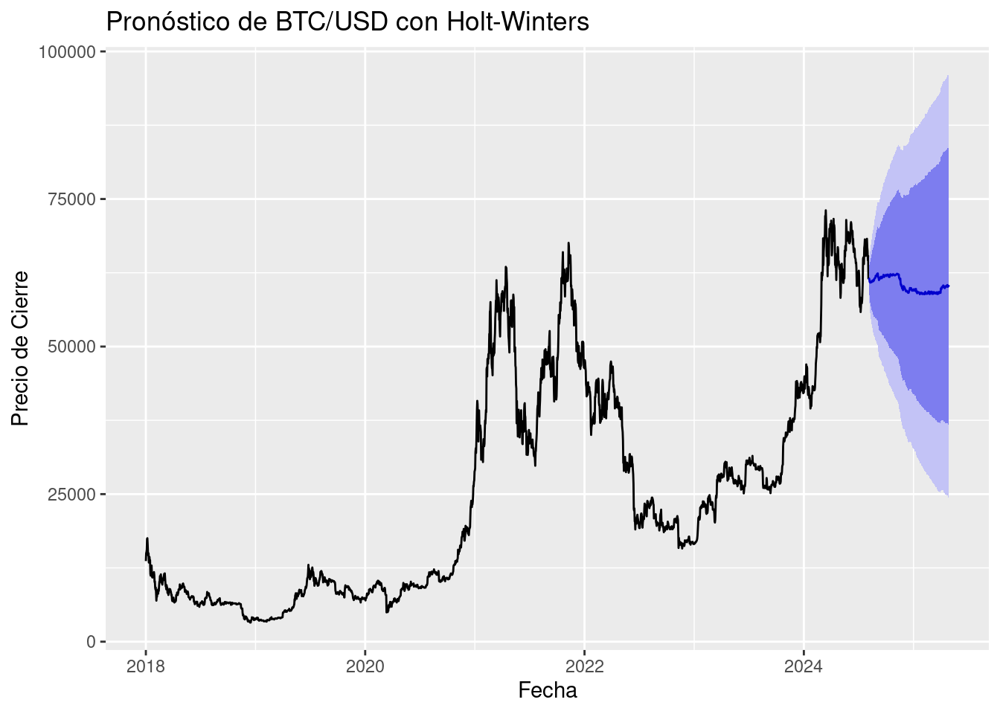

3 MODELADO
3.1 Modelo de Holt Winters
La metodología de Holt-Winters, también conocida como suavizamiento exponencial triple, es una técnica ampliamente utilizada en el análisis de series temporales para realizar pronósticos que presentan patrones de tendencia y estacionalidad. Esta metodología extiende el suavizamiento exponencial simple incorporando componentes adicionales que permiten capturar dinámicamente la evolución de la tendencia y la estacionalidad a lo largo del tiempo. Holt-Winters se presenta en dos variantes principales: aditiva y multiplicativa, dependiendo de la naturaleza del componente estacional. Es particularmente útil en contextos donde los datos muestran fluctuaciones regulares en intervalos específicos (como días, semanas o meses), y permite generar predicciones a corto y mediano plazo con un alto grado de precisión. Su implementación práctica ha demostrado ser eficaz en áreas como la economía, la meteorología, la gestión de inventarios y el consumo de recursos, como agua o energía(Hurtado Garzón 2013).
Teniendo en cuenta la fase de preprocesamiento, se observa que la serie transformada por el logaritmo (es decir no se uso la serie diferenciada que es estacionaria) presenta una estacionalidad visible, así como una tendencia definida, caracterizada por un comportamiento que decrece, se estabiliza y vuelve a decrecer. Esto indica que cumple con los criterios visuales necesarios para aplicar la metodología en cuestión. Además, el patrón estacional parece ser claro y repetitivo, lo cual sugiere la presencia de una estacionalidad aditiva. No obstante, al implementar el modelo, es importante considerar los residuos, ya que se identifican picos que podrían estar asociados a eventos atípicos o posibles errores de medición.
Cabe resaltar que esta metodología no requiere que la serie sea estacionaria. En cambio, se enfoca en identificar una tendencia y una estacionalidad bien definidas, ya que el pronóstico se basa en estos dos componentes junto con la media de la serie.
A continuación, se procede a aplicar el método de Holt Winter a los precios de cierre diarios del Bitcoin, dentro de la aplicación de este modelo se asume una estacionalidad aditiva.
## Installing package into '/cloud/lib/x86_64-pc-linux-gnu-library/4.4'
## (as 'lib' is unspecified)## Loading required package: xts## Loading required package: zoo##
## Attaching package: 'zoo'## The following objects are masked from 'package:base':
##
## as.Date, as.Date.numeric## Loading required package: TTR## Registered S3 method overwritten by 'quantmod':
## method from
## as.zoo.data.frame zoo`{r cargar-librerias, message=FALSE, warning=FALSE} library(quantmod) # <- Esta línea es clave library(zoo) # (si vas a usar as.zoo)
# Descargar datos de Yahoo Finance
getSymbols("BTC-USD",
src = "yahoo",
from = "2018-01-01",
to = "2025-04-27",#Sys.Date(),
periodicity = "daily")## [1] "BTC-USD"# Convertir el objeto descargado a 'zoo'
btc_zoo <- as.zoo(`BTC-USD`)
# Ver las primeras filas
tail(btc_zoo)## BTC-USD.Open BTC-USD.High BTC-USD.Low BTC-USD.Close BTC-USD.Volume
## 2025-04-22 87521.88 93817.38 87084.53 93441.89 55899038456
## 2025-04-23 93427.59 94535.73 91962.96 93699.11 41719568821
## 2025-04-24 93692.40 94016.20 91696.71 93943.80 31483175315
## 2025-04-25 93954.25 95768.39 92898.59 94720.50 40915232364
## 2025-04-26 94714.65 95251.36 93927.25 94646.93 17612825123
## 2025-04-27 94660.91 95301.20 93665.40 93754.84 18090367764
## BTC-USD.Adjusted
## 2025-04-22 93441.89
## 2025-04-23 93699.11
## 2025-04-24 93943.80
## 2025-04-25 94720.50
## 2025-04-26 94646.93
## 2025-04-27 93754.84library(zoo)
btc_close <- as.zoo(btc_zoo$`BTC-USD.Close`)
btc_ts <- ts(coredata(btc_close), frequency = 365, start = c(2018, 1))a continuación se aplica el modelo.
## Length Class Mode
## fitted 9236 mts numeric
## x 2674 ts numeric
## alpha 1 -none- numeric
## beta 1 -none- numeric
## gamma 1 -none- numeric
## coefficients 367 -none- numeric
## seasonal 1 -none- character
## SSE 1 -none- numeric
## call 2 -none- callPronostico de 30 días.
# Pronóstico a futuro (30 días)
forecast_hw <- forecast(modelo_hw, h = 30)
autoplot(forecast_hw) +
ggtitle("Pronóstico de BTC/USD con Holt-Winters") +
ylab("Precio de Cierre") +
xlab("Fecha")Pronóstico para 110 días.
ultimos_10 <- tail(btc_ts, 10)
# Pronóstico
forecast_hw <- forecast(modelo_hw, h = 110)
proyeccion <- forecast_hw$mean
serie_completa <- ts(c(ultimos_10, proyeccion), start = time(ultimos_10)[1], frequency = frequency(btc_ts))
df_proyeccion <- data.frame(
Fecha = time(serie_completa),
Precio = as.numeric(serie_completa),
Tipo = c(rep("Real", length(ultimos_10)), rep("Pronóstico", length(proyeccion)))
)
# Grafico
ggplot(df_proyeccion, aes(x = Fecha, y = Precio, color = Tipo)) +
geom_line(size = 1.2) +
ggtitle("BTC/USD: Últimos 10 días + Pronóstico Holt-Winters") +
ylab("Precio de cierre") +
xlab("Fecha") +
scale_color_manual(values = c("Real" = "black", "Pronóstico" = "blue")) +
theme_minimal()## Warning: Using `size` aesthetic for lines was deprecated in ggplot2 3.4.0.
## ℹ Please use `linewidth` instead.
## This warning is displayed once every 8 hours.
## Call `lifecycle::last_lifecycle_warnings()` to see where this warning was
## generated.## Don't know how to automatically pick scale for object of type <ts>. Defaulting
## to continuous.
3.2 Metodología Box-Jenkins
La metodología Box-Jenkins es un enfoque sistemático que permite identificar, estimar y validar modelos ARMA o ARIMA que se ajusten adecuadamente a una serie de tiempo. Esta metodología consta de cuatro etapas principales:
Identificación del modelo En esta etapa se analiza si la serie es estacionaria. Si no lo es, se aplican transformaciones (como la diferenciación) para lograr la estacionariedad. A continuación, se identifican los posibles valores de los parámetros del modelo ARIMA(p, d, q), con base en el análisis gráfico y estadístico. Actividades comunes:
Análisis gráfico: para detectar tendencia, estacionalidad o cambios en la media.
Prueba de estacionariedad: como la prueba de Dickey-Fuller, que evalúa si la serie tiene raíz unitaria.
Diferenciación: si la serie no es estacionaria, se aplica una o más veces para lograr la estacionariedad y determinar el parámetro d.
Revisión de ACF y PACF:
ACF (autocorrelación): ayuda a identificar el orden q (media móvil).
PACF (autocorrelación parcial): permite sugerir el orden p (autorregresivo).
Estimación de parámetros Una vez identificado el modelo, se ajusta a los datos para estimar sus parámetros.
Actividades:
Estimar los coeficientes mediante métodos como máxima verosimilitud.
Evaluar la significancia estadística de los parámetros.
Comparar modelos alternativos utilizando criterios como:
AIC (Criterio de Información de Akaike)
BIC (Criterio de Información Bayesiano)
RMSE (Raíz del error cuadrático medio)
Verificación del modelo Se valida que los residuos del modelo se comporten como ruido blanco, es decir, que no presenten autocorrelación y tengan media cero y varianza constante. Actividades:
Analizar los residuos en el tiempo.
Revisar los gráficos de ACF y PACF de los residuos.
Verificar la normalidad mediante histogramas o pruebas como Shapiro-Wilk.
Verificar independencia mediante pruebas como Ljung-Box.
Si los supuestos no se cumplen, se debe reconsiderar el modelo y repetir las etapas anteriores.
Pronóstico Una vez validado el modelo, se procede a generar pronósticos a corto, mediano o largo plazo. Actividades:
Generar predicciones con intervalos de confianza.
Comparar los pronósticos con datos reales (si están disponibles).
Evaluar la precisión del modelo predictivo.
Cabe resaltar que actualmente se dispone de la librería forecast en R, la cual incluye la función auto.arima, que permite seleccionar automáticamente los parámetros del modelo ARIMA de forma eficiente. Este procedimiento se basa en criterios estadísticos como AIC o BIC para identificar la combinación óptima de parámetros (p,d,q).
Gracias a esta automatización, se simplifican varios pasos tradicionales del proceso de modelado, como la inspección visual de los gráficos ACF y PACF, la identificación manual del grado de diferenciación d, y la evaluación de múltiples combinaciones de parámetros para encontrar el mejor modelo.
Por tanto, en esta etapa nos enfocaremos únicamente en la validación de los supuestos del modelo sobre los residuos y en la evaluación del desempeño de los pronósticos (Hurtado Garzón 2013).
3.3 Modelo Arima
Los modelos autorregresivos integrados de media móvil (ARIMA, por sus siglas en inglés: AutoRegressive Integrated Moving Average) combinan tres componentes:
AR (Autorregresivo): la serie se explica por sus propios valores pasados.
I (Integrado): se aplican diferenciaciones a la serie para hacerla estacionaria.
MA (Media móvil): se modela el error como una combinación lineal de errores pasados.
Un modelo ARIMA se denota como ARIMA(p, d, q), donde:
p: número de términos autorregresivos (AR).
d: número de diferenciaciones necesarias para hacer la serie estacionaria.
q: número de términos de medias móviles (MA).
Estos modelos permiten describir y pronosticar el comportamiento de una serie de tiempo a partir de sus valores y errores pasados (Hurtado Garzón 2013).
3.3.1 Transformación serie de tiempo a estacionaria.
##
## Augmented Dickey-Fuller Test
##
## data: btc_ts
## Dickey-Fuller = -1.9006, Lag order = 13, p-value = 0.6204
## alternative hypothesis: stationaryDe acuerdo a la prueba Dickey Fuller se concluye que la serie de tiempo no es estacionaria dado que el Valor P esta por encima 0.05 , tal como se esperaba de acuerdo a su naturaleza de mercado financiero.
Por lo tanto a continuación se procede a realizar la diferenciación de la serie de tiempo.
## [1] 1## [1] 1
#nos indica que 1 así que diferenciamos una vez y la llamamos dif.Indice.ts
dif.btc.ts<-diff(btc_ts)
#la graficamos
plot(dif.btc.ts, main=" ", ylab="valor", col="deepskyblue", xlab="Años")
title(main="DIF Precios diarios BTC")Ahora se procede a confirmar nuevamente con la prueba Dickey Fuller que la serie diferenciada si sea estacionaria.
## Warning in adf.test(dif.btc.ts, , alternative = c("stationary", "explosive")):
## p-value smaller than printed p-value##
## Augmented Dickey-Fuller Test
##
## data: dif.btc.ts
## Dickey-Fuller = -12.708, Lag order = 13, p-value = 0.01
## alternative hypothesis: stationaryDe acuerdo al resultado de la prueba, se puede afirmar que la serie diferenciada es estacionaria
3.3.2 Funciones de ACF y PACT
Continuando con la metodología Box-Jenkins, ahora se define y genera las funciones ACF y PACT
En análisis de series de tiempo, la ACF (Función de Autocorrelación) y la PACF (Función de Autocorrelación Parcial) son herramientas visuales que ayudan a identificar la estructura de dependencia dentro de una serie temporal. La ACF muestra la correlación de una serie consigo misma a diferentes rezagos, mientras que la PACF controla la correlación de los rezagos anteriores al evaluar la correlación en un rezago específico.
ACF (Función de Autocorrelación) La ACF grafica la correlación entre una variable y sus valores rezagados en diferentes rezagos (diferencia de tiempo entre una observación y otra). Ayuda a identificar patrones como estacionalidad, tendencias y persistencia en la serie.
Se utiliza para determinar el orden del modelo AR (Autorregresivo) y MA (Promedio Móvil).
PACF (Función de Autocorrelación Parcial) La PACF muestra la correlación entre una variable y sus valores rezagados, después de haber eliminado el efecto de los rezagos intermedios. Ayuda a identificar el rezago exacto después del cual las autocorrelaciones cesan, lo cual es crucial para determinar el orden del modelo AR.
Se utiliza para identificar la presencia de patrones estacionales en la serie. Diferencias clave: La ACF considera todas las correlaciones, mientras que la PACF solo considera las correlaciones directas, eliminando las indirectas. La ACF es útil para identificar la estructura general de correlación, mientras que la PACF ayuda a identificar la estructura de dependencia más precisa. Interpretación:
Un corte abrupto en el gráfico ACF en un rezago específico sugiere que un modelo de series temporales con ese número de rezagos podría ser apropiado. Un gráfico ACF que decae lentamente puede indicar una tendencia en los datos. Un corte brusco en el gráfico PACF puede indicar la presencia de estacionalidad.

 ### Modelado Autoarima
### Modelado Autoarima
## Series: dif.btc.ts
## ARIMA(1,0,0) with zero mean
##
## Coefficients:
## ar1
## -0.0620
## s.e. 0.0193
##
## sigma^2 = 1491145: log likelihood = -22790.75
## AIC=45585.49 AICc=45585.5 BIC=45597.27## Successfully loaded changepoint package version 2.3
## WARNING: From v.2.3 the default method in cpt.* functions has changed from AMOC to PELT.
## See NEWS for details of all changes.## [1] 2654
## Point Forecast Lo 80 Hi 80 Lo 95 Hi 95
## 2025.3260 -382.83972 -1792.1618 1026.4824 -2538.212 1772.532
## 2025.3288 652.66945 -756.6527 2061.9916 -1502.703 2808.042
## 2025.3315 -672.31585 -2081.6380 737.0063 -2827.688 1483.056
## 2025.3342 -491.49158 -1900.8137 917.8306 -2646.864 1663.881
## 2025.3370 167.17408 -1242.1481 1576.4962 -1988.198 2322.546
## 2025.3397 425.05245 -984.2697 1834.3746 -1730.320 2580.425
## 2025.3425 420.51955 -988.8026 1829.8417 -1734.853 2575.892
## 2025.3452 -343.72783 -1753.0500 1065.5943 -2499.100 1811.644
## 2025.3479 -109.59213 -1518.9143 1299.7301 -2264.964 2045.780
## 2025.3507 -342.08749 -1751.4097 1067.2347 -2497.460 1813.285
## 2025.3534 -1066.13994 -2475.4621 343.1823 -3221.512 1089.232
## 2025.3562 27.44961 -1381.8726 1436.7718 -2127.923 2182.822plot(pred, main=" ", ylab="valor", col="red", xlab="Años")
title(main="Predicción DIF Precios del Bitcoin")
3.4 Regresión de una serie de tiempo y Algoritmo Facebook´s Prophet
3.4.1 Regresión de una serie
El proceso de transformar una serie en una regresión consiste en usar sus valores pasados(lags) para predecir valores futuros, esto se logra mediante la creación de variables yt−1yt−1, yt−2yt−2, en general yt−kyt−k para algun k entero y un tiempo t de manera que lo valores ytyt se puedan estimar mediante el modelo:
yt=β0+β1yt−1+…+βkyt−k+ϵt
esta es la forma de una regresión lineal autoregresiva AR(p)(Hamilton 1994).Ademas de esta forma se pueden agregar un conjunto de variables externas XtXt, de forma que el modelo se convierte en:yt=β0+β1yt−1+…+βkyt−k+βk+1Xt+ϵtyt=β0+β1yt−1+…+βkyt−k+βk+1Xt+ϵt denominado modelo ARX (Ljung 1999)
3.4.2 Algoritmo Facebook´s Prophet
Prophet es un algoritmo desarrollado por el equipo de investigación de facebook para el pronostico de series de tiempo, su finalidad es la robustez frente a datos faltantes, cambios en la tendencia y múltiples estacionalidades. El modelo Prophet no es una regresión como tal, mas bien es una descomposición de forma aditiva, ya que se asume una descomposición de la serie de la siguiente forma: y(t)=g(t)+s(t)+h(t)+ϵty(t)=g(t)+s(t)+h(t)+ϵt donde: g(t):tendencia s(t):estacionalidad g(t):efecto de dias festivos ϵt:error(ruido blanco) dado que este metodo solo busca pronosticar valores futuros, no es necesario validar supuestos de normalidad en los errores, sin embargo si se debe verificar como una buena practica, que estos no estén correlacionados y que tengan media cero y varianza constante(Facebook Core Data Science Team 2023).
## Loading required package: Rcpp## Loading required package: rlangstart_date <- as.Date("2018-01-01")
btc_df <- data.frame(
ds = seq(start_date, by = "day", length.out = length(btc_ts)),
y = as.numeric(btc_ts)
)## Disabling daily seasonality. Run prophet with daily.seasonality=TRUE to override this.# Hacer predicciones a 30 días
future <- make_future_dataframe(modelo_pr, periods = 30)
forecast <- predict(modelo_pr, future)
# Grafico
plot(modelo_pr, forecast) +
ggtitle("Predicción de precios BTC con Prophet")# Residuales
residuos <- btc_df$y - predict(modelo_pr, btc_df)$yhat[1:nrow(btc_df)]
# Graficar residuos
plot(residuos, type = "l", main = "Residuos", ylab = "Error", xlab = "Tiempo")##
## Shapiro-Wilk normality test
##
## data: residuos
## W = 0.97799, p-value < 2.2e-16# Validación cruzada: horizonte de 30 días
df_cv <- cross_validation(modelo_pr, initial = 180, period = 30, horizon = 30, units = "days")## Making 83 forecasts with cutoffs between 2018-07-03 and 2025-03-28## Warning in cross_validation(modelo_pr, initial = 180, period = 30, horizon =
## 30, : Seasonality has period of 365.25 days which is larger than initial
## window. Consider increasing initial.## Warning in .local(object, ...): non-zero return code in optimizing## Optimization terminated abnormally. Falling back to Newton optimizer.## horizon mse rmse mae mape mdape smape coverage
## 1 3 days 57994507 7615.412 5233.187 0.1679582 0.1274214 0.1706609 0.4337349
## 2 4 days 60848792 7800.564 5395.434 0.1760910 0.1285579 0.1797146 0.4257028
## 3 5 days 67162563 8195.277 5674.725 0.1879776 0.1426778 0.1928939 0.4096386
## 4 6 days 70884858 8419.315 5867.574 0.1957333 0.1514895 0.2045129 0.4136546
## 5 7 days 72944942 8540.781 6008.401 0.2014874 0.1540398 0.2131053 0.3975904
## 6 8 days 73639451 8581.343 5998.679 0.2047503 0.1514895 0.2174448 0.3975904